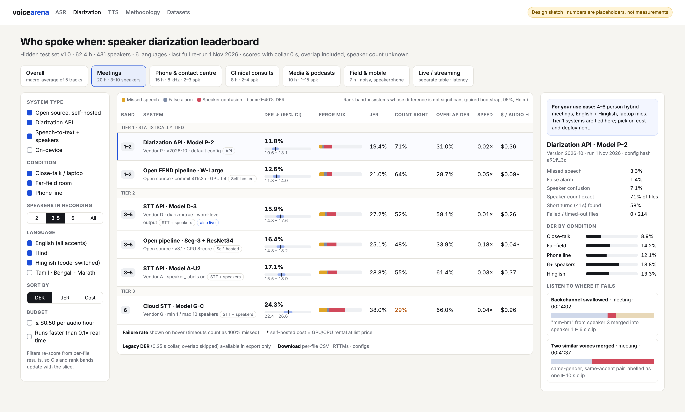

An evaluation design for a public speaker diarization leaderboard, with a small pilot run on public recordings.
A diarization leaderboard is only useful if it helps someone make a decision they would otherwise get wrong. So I started from the people who will open the page and worked backwards to the design.
| User | Decision they make with it | What they need to see | Design consequence |
|---|---|---|---|
| Product engineer at a meeting-notes or note-taker company | Which API or model to ship; whether to switch vendors | 3–10 speakers, laptop and room mics, people talking over each other, many short "yeah"/"right" turns. Cost per hour and speed. | Meetings track; overlap DER; short-turn recall; $/hour |
| Contact-centre analytics lead | Which vendor to buy for agent/customer split on 8 kHz calls | Two (sometimes three, on transfer) speakers, phone codecs, hold music, IVR prompts. Mostly cares about confusion between agent and customer. | Phone track at native 8 kHz; confusion shown separately |
| Health-tech / medical-scribe team | Whether diarization is good enough to attribute clinical statements to doctor vs patient | 2–4 speakers (doctor, patient, family member, interpreter), room mic, quiet short answers. Errors are expensive. | Clinical track; JER so the quiet patient counts as much as the talkative doctor |
| Media, subtitling and podcast tools | Which system scales to long, many-speaker content | 1–15+ speakers, music, laughter, crosstalk on panels. | Media track; speaker-count error |
| Voice-agent and live-captioning builders | Which system works live | Latency of speaker labels, accuracy while streaming vs after the call. | Separate live table; never mixed with offline ranks |
| Model builders (open-source labs, vendors) | Where their system fails and what to fix next | Error breakdown per condition, per-file results, a public dev set to iterate on. | Public dev split; per-file export; failure clips |
| Non-technical buyer (procurement, founder) | Shortlist two or three vendors to trial | A plain answer: "for 4–6 person meetings in English and Hinglish, these are tied at the top". | Rank bands instead of fake precision; use-case filter |
Out of scope for v1: speaker identification (naming who "Speaker 2" is), transcription accuracy on its own (that is the ASR leaderboard), and multi-channel array processing as the main track (offered as a side track, because most products receive one mixed channel).
| Type | What it is | What it outputs / how we run it |
|---|---|---|
| A. Open-source modular pipelines | Voice activity + segmentation model, speaker-embedding model, clustering. The classic recipe (pyannote, NeMo clustering, 3D-Speaker). | Segments with labels. Self-hosted in our container on a fixed GPU and a fixed CPU box. |
| B. Open-source end-to-end neural | One network predicts per-frame speaker activity directly, often with clustering for long audio (Sortformer, DiariZen, EEND variants). | Segments; handles overlap natively. Self-hosted. |
| C. Diarization-only APIs | Commercial services whose product is diarization. | Segments via REST. Called from our runner. |
| D. Speech-to-text APIs with speaker labels | The most common way companies actually get diarization: a transcript where each word has a speaker tag. | Words with timestamps and speaker tags. Converted to segments by a published rule (below). |
| E. Live / streaming systems | Give speaker labels while audio is still arriving. | Fed in real time; scored in the live table on final output plus latency. |
| F. On-device SDKs | Run on phone or laptop without cloud. | Run on a reference laptop; shown with a device badge. |
Model names below are the public identifiers as I understand them in November 2026. Before the first run each one is pinned to an exact version string or commit hash and the date it was called, because API models change silently.
| # | Company / project | Exact model or setting | Type | How we run it | Live? |
|---|---|---|---|---|---|
| 1 | pyannote (open source) | pyannote/speaker-diarization-community-1 (pyannote.audio 4.x) | A | Self-hosted, GPU + CPU | No |
| 2 | pyannote (open source) | pyannote/speaker-diarization-3.1 (legacy baseline, widely deployed) | A | Self-hosted | No |
| 3 | pyannoteAI | Precision-2 diarization API | C | API | No |
| 4 | NVIDIA NeMo | nvidia/diar_sortformer_4spk-v1 (offline end-to-end) | B | Self-hosted, GPU | No |
| 5 | NVIDIA NeMo | nvidia/diar_streaming_sortformer_4spk-v2 | B / E | Self-hosted, streamed | Yes |
| 6 | BUT Speech@FIT | DiariZen, BUT-FIT/diarizen-wavlm-large-s80-md | B | Self-hosted, GPU | No |
| 7 | Alibaba 3D-Speaker | 3D-Speaker diarization recipe (CAM++ embeddings + clustering) | A | Self-hosted | No |
| 8 | Deepgram | Nova-3 with diarize=true | D / E | API, batch and streaming | Yes |
| 9 | AssemblyAI | Universal (batch) with speaker_labels=true | D | API | No* |
| 10 | Amazon Web Services | Amazon Transcribe, ShowSpeakerLabels on | D / E | API | Yes |
| 11 | Google Cloud | Speech-to-Text V2, Chirp 3 with speaker diarization | D | API | No |
| 12 | Microsoft | Azure AI Speech, fast transcription / conversation transcription with diarization | D / E | API | Yes |
| 13 | Speechmatics | Batch transcription, enhanced operating point, diarization: speaker | D / E | API | Yes |
| 14 | ElevenLabs | Scribe (scribe_v1) with diarize=true | D | API | No* |
| 15 | OpenAI | gpt-4o-transcribe-diarize | D | API | No |
| + | Rev | Reverb diarization v2 (open weights) | A | Self-hosted | No |
| + | Picovoice | Falcon speaker diarization (on-device) | F | Reference laptop | No |
* The vendor has a separate streaming product; whether its streaming endpoint returns speaker labels is checked at onboarding and the badge set from that, not from marketing pages. Rows marked "+" are reserve entries if a launch system cannot be run under our terms (for example, no zero-retention option).
| Problem | Rule |
|---|---|
| Different inputs | Every system gets the same file: 16 kHz, 16-bit mono WAV; the phone track at its native 8 kHz (we do not upsample for systems that accept 8 kHz). No denoising or gain changes by us. |
| Hints that some systems accept | Main ranking: no speaker count, no min/max. Language code is given, because every real buyer knows the language of their product and many STT APIs require it. A separate, clearly labelled "count hinted" column shows results when the true count is supplied, so users with fixed-count calls can see the gain. Hinted results never enter the rank. |
| Configuration | Two runs per system: vendor defaults, and one declared best config the vendor (or we, from public docs) submits before seeing test data. No tuning on test. Config is published with a hash. |
| Speech detection | Systems use their own. Oracle speech regions are a lab setting no product has, so they are only used in a diagnostic view. |
| Word-level outputs (type D) | Converted to segments by one published rule: each word becomes [start, end] with its speaker; consecutive words of the same speaker are joined if the gap is under 0.5 s. Because word timings hide pauses and backchannels, type-D systems are also scored with a word-level metric (WDER) so they are not judged only on a format that disadvantages them. |
| Overlap | Scored for everyone. A system that cannot output two speakers at once loses on overlap; that is the experience its users will have, so it stays. |
| Versions drift | Each row shows the version string, call date and a re-run date. API systems are re-run monthly on a 10% "drift probe"; if DER moves by more than the CI half-width, the full set is re-run and the change is flagged. |
| Failures | Time-outs, crashes and empty outputs count as 100% missed speech for that file, and the failure rate is shown. Otherwise a flaky system could look good by failing on the hard files. |
| Compute | Self-hosted systems run on a fixed reference GPU (one NVIDIA L4) and a fixed 8-core CPU instance. Speed is reported as real-time factor; cost is rental price per audio hour so it is comparable to API pricing. |
| Live systems | Audio is streamed at 1× real time in 100 ms chunks. We score the final labels and measure label latency (time from a word being spoken to a stable speaker tag). Live and offline are separate tables. |
| Data protection | Test audio is sent only to APIs with a zero-retention / no-training option enabled, which also stops vendors from training on the hidden set. |
The test set has to look like what the users above actually process, and it has to stay hidden. Public sets (AMI, VoxConverse, DIHARD dev, CALLHOME) are valuable but they have been on the internet for years and are almost certainly in some vendors' training data. So the ranked set is newly recorded, and a small public anchor set is reported next to it (not ranked) so numbers can be related to the literature.
| Track | Hours (test / dev) | Recordings | Speakers per file | Settings and devices |
|---|---|---|---|---|
| Meetings | 20 / 3 | ~90 × 10–20 min | 3–10 | In-room meetings (table mic, laptop mic, ceiling array), hybrid calls (Zoom / Meet / Teams recordings with remote participants), stand-ups |
| Phone & contact centre | 15 / 2 | ~180 × 3–8 min | 2–3 | Real PSTN and VoIP legs, G.711 and narrowband codecs, mobile on speaker, hold music, IVR prompts, call transfers |
| Clinical consults | 8 / 1 | ~60 × 6–12 min | 2–4 | Role-played consultations with trained actors and clinicians in exam rooms; phone on desk; family member or interpreter in some |
| Media & podcasts | 10 / 2 | ~50 × 8–20 min | 1–15 | Podcasts, panel discussions, news debates, interviews; licensed or commissioned; music beds and laughter |
| Field & mobile | 7 / 1 | ~60 × 4–10 min | 2–5 | Car, street, kitchen, shop counter; phone in pocket or on a table; wind and traffic |
| Total | 60 / 9 | ~440 | 1–15 | Plus ~2.5 h of single-speaker files spread across tracks, so over-splitting one voice is caught |
The size is set by how precise the leaderboard needs to be, not by habit. Recordings, not minutes, are the unit that varies: in the pilot (section 6) the best system's DER ranged from 18% to 50% across files, a between-recording standard deviation of about 10 points. With that spread, a 95% interval of about ±2 to ±2.5 points per track needs roughly 60–90 recordings (1.96 × 10 / √n), which is where the recording counts above come from. Strong commercial systems sit at lower DER and usually spread less, so their intervals will be tighter, and paired comparisons between systems are tighter still. Smaller tracks (media, clinical) get wider intervals, and the page shows them honestly rather than padding the track.
| Check | What it does | Target / action |
|---|---|---|
| Inter-annotator agreement | Score annotator A against annotator B with the same DER we use for systems (collar 0). This also tells us the noise floor: no system should be ranked on differences smaller than human disagreement. | Below 4% DER per track; tracks above get guideline revision and re-labelling |
| Boundary agreement | Median distance between the two annotators' segment edges. | Under 100 ms |
| Automatic sanity checks | Segments outside the file, a label on a channel that is silent, speaker counts that disagree with the session sheet, impossible overlaps (3+ people for long stretches). | Must pass before release |
| "Systems agree, label doesn't" mining | After the first run, find regions where the top 3–4 systems agree with each other but disagree with the reference. These are the most likely label errors. A blind annotator re-checks them. | Publish how many were real label errors |
| Gold audit | A senior annotator re-labels a random 2% each release without seeing the existing label. | Error rate published |
| Versioning | Reference is versioned (v1.0, v1.1, …) with a changelog; all systems are re-scored on each version, so ranks never mix reference versions. | Always |
In plain words: of all the time someone was speaking, what share did the system get wrong? There are three ways to get it wrong: it said nobody was talking when someone was (missed speech), it said someone was talking when nobody was (false alarm), or it gave the speech to the wrong person (speaker confusion). System labels ("spk00") are matched to reference speakers in the way that is most favourable to the system (one-to-one, Hungarian matching), because systems are not told who anyone is.
In overlap, each speaker's time counts separately, so 2 s where two people talk counts as 4 s of speech. DER can exceed 100% if a system adds a lot of false speech.
Why DER as the headline: it is time-weighted, which is what a user experiences reading a transcript ("how much of this is attributed wrongly?"), it splits into parts that tell an engineer what to fix, and it is what the whole field reports, so people can relate our numbers to papers. Its weakness is that a speaker who talks for 30 seconds in an hour barely affects it. That is why JER sits right next to it.
How it is aggregated: within a track, errors and speech time are summed over all files and then divided (pooled), so a 20-minute meeting counts more than a 3-minute one, as it would for a user. "Overall" is the unweighted mean of the five track DERs, so the 20-hour meetings track does not drown out the clinical track.
| Metric | Plain meaning | Why it is there |
|---|---|---|
| Missed / false alarm / confusion | The three parts of DER, each as % of speech. | Tells a builder whether the problem is detecting speech or telling voices apart. |
| JER (Jaccard error rate) | For each real speaker, how badly their speech overlaps with the system speaker matched to them (1 − intersection/union), then averaged over speakers so each person counts equally. | Protects quiet and minority speakers: the patient in a consult, the customer who says little. |
| Speaker-count accuracy | % of files where the system found exactly the right number of speakers; also mean absolute error. | A "3 speakers" meeting shown as 5 is a visible, embarrassing failure even if DER looks fine. |
| Overlap DER | DER measured only inside regions where 2+ people talk. | Meetings and debates live here; many systems quietly give up in overlap. |
| Short-turn recall | % of reference turns shorter than 1 s for which the system assigns at least half the turn to the right speaker. | Backchannels carry meaning ("haan, theek hai" is agreement) and are the first thing systems drop. |
| WDER (word diarization error rate) | For STT systems: % of correctly recognised words that got the wrong speaker. | Fair view of type-D systems, matching how their users consume output. |
| cpWER / tcpWER (MeetEval) | Word error rate after the best mapping of system speakers to real speakers; tcpWER also checks timing. | Optional column for "who said what" products; links diarization to transcript quality. |
| Robustness gap | DER on degraded condition minus DER on clean condition, on the same conversations. | Shows which systems collapse on far-field or phone audio. |
| Speed, latency, cost, failure rate | Real-time factor; live label latency (p50 / p95); $ per audio hour; % of files failed. | Part of the buying decision. |
| Setting | Choice | Reason |
|---|---|---|
| Collar (tolerance around boundaries) | 0 s | The 0.25 s collar came from an era when human boundaries were rough. Our boundaries come from forced alignment plus human checks, so they are good to roughly 0.1 s. A 0.25 s collar on each side removes half a second around every boundary, which wipes out most of a 0.6 s "yeah" and hides exactly the errors users notice. DIHARD made the same call. A legacy DER (0.25 s collar, overlap skipped) is still computed and exported, only for comparing with older papers. |
| Overlapping speech | Scored | Overlap is a large share of meeting speech and where systems differ the most. Skipping it rewards systems that ignore it. In the pilot, the legacy setting (0.25 s collar, overlap skipped) cut the best system's DER from 32.1% to 25.6%: a fifth of the error disappeared without the system changing at all. |
| Number of speakers | Not given | No product knows how many people will join a meeting. Count-hinted runs are shown in a separate column for fixed-count use cases (two-party calls). |
| Speech activity | System's own | Oracle speech regions remove the hardest part of the problem in noisy audio. |
| Scored region (UEM) | Whole file minus marked regions | Excluded: consent prompts, bleeped PII, IVR / machine speech, overlapped laughter. |
| Label mapping | One-to-one, optimal (Hungarian) | Standard; extra system speakers become confusion or false alarm. |
| Tools | pyannote.metrics as the scorer, dscore as an independent cross-check, MeetEval for cpWER/tcpWER | Two independent scorers must agree on every file before results are published. (In the pilot they did; see section 6.) |
Two systems with DER 14.1% and 14.6% on 60 hours may well be tied: one hard file can swing that. The rules:
| The score | DER with 95% CI, rank band |
| Why it is that score | Missed / false alarm / confusion, JER, speaker-count accuracy, overlap DER, short-turn recall, WDER for STT systems |
| Where it breaks | DER by condition (close-talk, far-field, phone, speaker count, language), robustness gap, 2–3 short audio clips of typical errors (from the public dev set only) |
| Practical | Real-time factor or live latency, $ per audio hour, failure rate, deployment (API / self-host / on-device), live support |
| Provenance | Model ID and version, call date, config and hash, hardware for self-hosted, reference version, scorer versions, "hinted" vs "unhinted" |
| Comparability | Legacy DER (0.25 s collar, no overlap) and public-anchor-set DER, exported but not ranked |
The full-size mockup is a separate deliverable (Amartya_Singh_Q1_Leaderboard_Sketch.png, and the HTML in the repo). Values in it are placeholders, deliberately anonymised so nobody mistakes them for measurements. What it shows:

Using a collar of 0 s as the primary setting. I believe it is right for the users, but it makes the score depend on how annotators place boundaries. If our annotators systematically start segments 80 ms earlier than a system's speech detector does, every system pays a small penalty that has nothing to do with "who spoke when". Forced alignment and double annotation reduce this, but the pilot showed the stakes: a 0.25 s collar alone removed 4 points of the best system's 32-point DER, more than skipping overlap did. Some of that is real error on short turns and some is boundary jitter, and I cannot yet say how much of each. I would want to measure the share of collar-0 DER that sits within ±0.1 s of a reference boundary and publish it next to the score. A close second: giving the language code to every system. It is realistic, but it slightly favours STT-based systems that use language to choose models.
DIHARD III (Ryant et al.). Three ideas came from it directly: scoring with no collar and with overlap, because real audio has both; reporting by domain instead of one pooled number, because systems that win on one domain lose on another; and pairing DER with JER so minority speakers are not invisible. The second biggest influence was AMI / AliMeeting / CHiME for the data side: recording every speaker on a close-talk channel alongside the far-field device is the single best way to get a trustworthy reference in overlap, and it lets one recording produce several conditions. VoxConverse showed me why speaker count must be unknown (its files range from one to over twenty speakers), and the CHiME-8 DASR habit of macro-averaging across scenarios is where my "Overall = plain mean of tracks" comes from.
| Risk | Guard |
|---|---|
| Fake precision: ranking on noise | Recording-level paired bootstrap, practical floor, rank bands instead of strict ranks |
| One number hiding the use case | Track tabs as the default view; overall is a macro-average, never weighted by hours |
| Settings that flatter systems | Collar 0, overlap scored, count unknown, own SAD; legacy numbers exported but never ranked |
| Test data in training sets | New hidden recordings, zero-retention APIs, canaries, yearly 20% refresh; public sets only as unranked anchors |
| Wrong reference labels | Close-talk channels, 20% double annotation, IAA as noise floor, "systems agree, label disagrees" audit, versioned references |
| Silent API changes | Version + date on every row, monthly drift probe, re-run on drift |
| Vendor tuning to the test | Configs declared before testing; no test feedback beyond the final score; private preview only for bug reports |
| Output-format bias against STT systems | Published word-to-segment rule plus WDER |
| Hiding failures | Failed files count as 100% missed; failure rate shown |